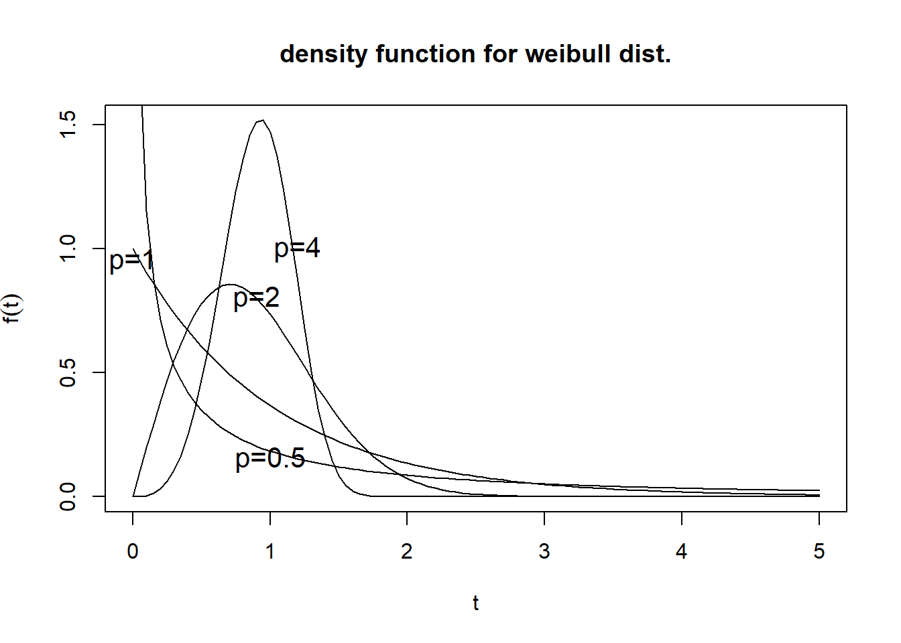
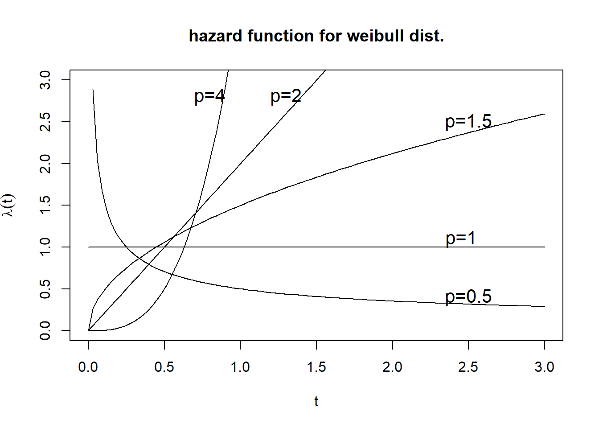
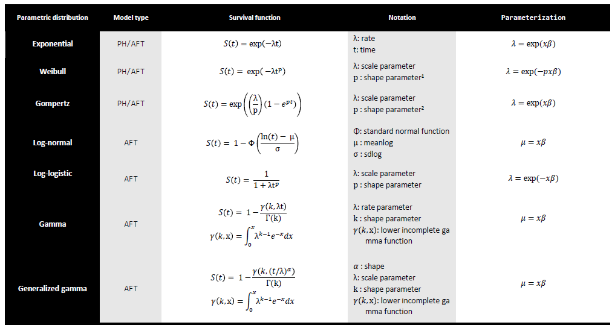
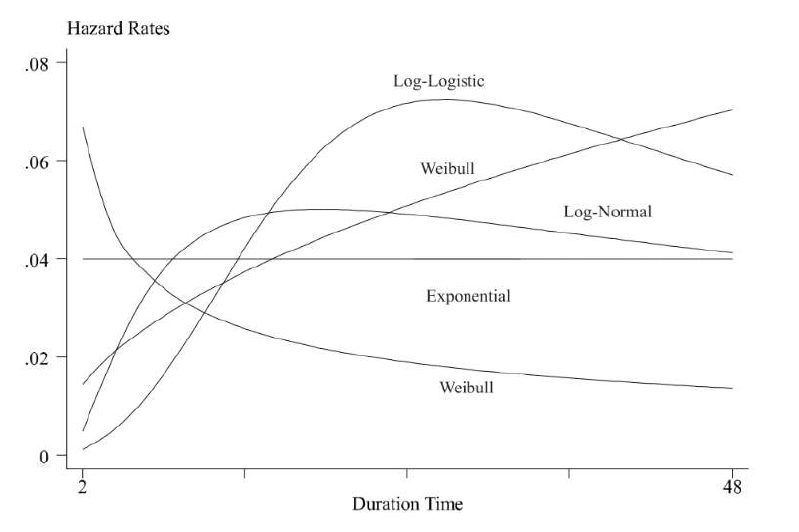
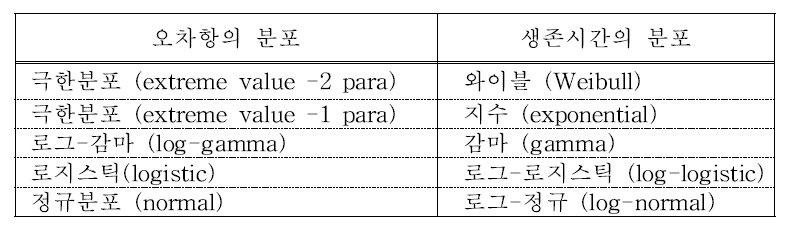

Chapter 5 모수적 생존함수 추정
- 필요 패키지 로드
library(autoReg)
library(survival)
library(survminer)
library(howto)
library(flextable)
library(ftExtra)
library(tidyverse)5.1 지수분포
생존시간의 분포형태가 알려져 있을 경우에는 비모수적인 방법보다 모수적인 방법을 이용하는 것이 더 효율적
생존시간의 분포가 지수분포(exponential distribution)인 경우 :
모수적 위험함수의 가장 단순한 형태로써 위험률이 시간에 대해 일정함
확률밀도함수: \(f(t)=\lambda e^{-\lambda t}\)
curve(dexp(x),0,5,ylab=expression(f(t))
,main='density function for exponential dist.',xlab='t')
curve(dexp(x,rate=0.5),0,5,add=T,lty=3)
curve(dexp(x,rate=2),0,5,add=T,lty=2)
text(0.25,0.9,expression(paste(lambda,'=1')),cex=1)
text(0.65,0.8,expression(paste(lambda,'=2')),cex=1)
text(3.5,0.15,expression(paste(lambda,'=0.5')),cex=1)
- 생존함수: \(S(t)=e^{-\lambda t}\)
### survival function for exponential
expsurv<-function(lamda,x){exp(-lamda*x)}
curve(expsurv(lamda=1,x),0,5,lty=1,ylab="S(t)",xlab='t',main='survival function for exponential dist.')
curve(expsurv(lamda=2,x),0,5,add=T,lty=2)
curve(expsurv(lamda=0.5,x),0,5,add=T,lty=3)
text(3,0.3,expression(paste(lambda,'=0.5')),cex=1)
text(1.5,0.3,expression(paste(lambda,'=1')),cex=1)
text(0.9,0.3,expression(paste(lambda,'=2')),cex=1)
- 위험함수: \(h(t)=\lambda\)
plot(c(0,5),c(1,1),type='l',axes=F,xlab='t',ylab='',cex.lab=1)
axis(1,at=c(0,5),labels=T)
axis(2,at=c(0,1,1.4),labels=c('',expression(lambda),expression(lambda (t)))
,las=1,pos=0,cex.axis=1)
title('hazard function for exponential dist.')
5.2 와이블분포
지수분포의 일반화된 형태로 생존분석에서 가장 많이 사용되는 분포
확률밀도함수: \(f(t)=\lambda p(\lambda t)^{p-1} exp(-(\lambda t)^p)\), \(\lambda\): scale parameter, \(p\): shape parameter
curve(dweibull(x,scale=1,shape=4),0,5,ylab=expression(f(t))
,main='density function for weibull dist.',xlab='t')
curve(dweibull(x,scale=1,shape=2),0,5,add=T)
curve(dweibull(x,scale=1,shape=1),0,5,add=T)
curve(dweibull(x,scale=1,shape=0.5),0,5,add=T)
text(1,0.15,expression(paste(p,'=0.5')),cex=1.3)
text(0.9,0.8,expression(paste(p,'=2')),cex=1.3)
text(1.2,1,expression(paste(p,'=4')),cex=1.3)
text(0,0.95,expression(paste(p,'=1')),cex=1.3)
- 생존함수: \(S(t)=exp(-(\lambda t)^p)\)
weisurv<-function(lamda,x,p){exp(-(lamda*x)^p)}
curve(weisurv(lamda=1,x,p=4),0,3,lty=1,ylab="S(t)",xlab='t',main='survival function for weibull dist.')
curve(weisurv(lamda=1,x,p=2),0,3,add=T,lty=2)
curve(weisurv(lamda=1,x,p=1.5),0,3,add=T,lty=3)
curve(weisurv(lamda=1,x,p=1),0,3,add=T,lty=4)
curve(weisurv(lamda=1,x,p=0.5),0,3,add=T,lty=5)
text(0.7,0.9,expression(paste(p,'=4')),cex=0.9)
text(0.5,0.85,expression(paste(p,'=2')),cex=0.9)
text(0.5,0.75,expression(paste(p,'=1.5')),cex=0.9)
text(0.4,0.65,expression(paste(p,'=1')),cex=0.9)
text(0.3,0.55,expression(paste(p,'=0.5')),cex=0.9)
- 위험함수: \(h(t)=\lambda p(\lambda t)^{p-1}\)
curve(dweibull(x,scale=1,shape=4)/(1-pweibull(x,scale=1,shape=4)),0,3,ylim=c(0,3)
,ylab=expression(lambda(t)),main='hazard function for weibull dist.',xlab='t')
curve(dweibull(x,scale=1,shape=2)/(1-pweibull(x,scale=1,shape=2)),0,3,add=T)
curve(dweibull(x,scale=1,shape=1)/(1-pweibull(x,scale=1,shape=1)),0,3,add=T)
curve(dweibull(x,scale=1,shape=1.5)/(1-pweibull(x,scale=1,shape=1.5)),0,3,add=T)
curve(dweibull(x,scale=1,shape=0.5)/(1-pweibull(x,scale=1,shape=0.5)),0,3,add=T)
text(2.5,0.4,expression(paste(p,'=0.5')),cex=1.3)
text(2.5,2.5,expression(paste(p,'=1.5')),cex=1.3)
text(0.8,2.8,expression(paste(p,'=4')),cex=1.3)
text(1.3,2.8,expression(paste(p,'=2')),cex=1.3)
text(2.45,1.1,expression(paste(p,'=1')),cex=1.3)
5.3 감마분포
- 확률밀도함수: \(f(t)=\frac{\lambda^k}{\Gamma(k)}t^{k-1}exp(-\lambda t)\)
curve(dgamma(x, shape=0.3),0,5,ylab=expression(f(t)),main='density function for Gamma dist.',xlab='t')
curve(dgamma(x, shape=1),0,5,add=T,lty=2)
curve(dgamma(x, shape=2),0,5,add=T,lty=3)
curve(dgamma(x, shape=4),0,5,add=T,lty=4)
legend(4,2.5,c("k=0.3","k=1","k=2","k=4"),lty=1:4,bty="n",cex=0.9)
- 생존함수
survgamma<-function(x,shape){1-pgamma(x,shape)}
curve(survgamma(x,shape=2),0,15,ylab="survival",xlab="t",cex=0.8)
curve(survgamma(x,shape=0.3),0,15,add=T, lty=2)
curve(survgamma(x,shape=1),0,15,add=T, lty=3)
curve(survgamma(x,shape=4),0,15,add=T, lty=4)
legend(10,1,c("k=2","k=0.3","k=1","k=4"),lty=1:4,bty="n",cex=0.8)
title("survival function for gamma dist.")
- 위험함수
x <- seq(0,30,by=0.01)
y <- dgamma(x,shape=2)/(1-pgamma(x,shape=2))
plot(x,y,type="l",xlim=c(0,29),ylim=c(0,3),xlab="time",ylab="hazard")
y <- dgamma(x,shape=0.3)/(1-pgamma(x,shape=0.3))
lines(x,y,lty=2)
y <- dgamma(x,shape=1)/(1-pgamma(x,shape=1))
lines(x,y,lty=3)
y <- dgamma(x,shape=4)/(1-pgamma(x,shape=4))
lines(x,y,lty=4)
title("hazard function for gamma dist.")
legend(23,2.7,c("k=2","k=0.3","k=1","k=4"),lty=1:4)
5.4 로그정규분포
- 확률밀도함수: \(f(t)=\frac{1}{\sqrt{2\pi}}pt^{-1}exp(\frac{-p^2 (log\lambda t)^2}{2})\)
curve(dlnorm(x, meanlog = 0, sdlog = 0.3, log = FALSE), 0,5,ylab=expression(f(t)),main='density function for log normal dist.',xlab='t')
curve(dlnorm(x, meanlog = 0, sdlog = 1, log = FALSE),0,5,add=T,lty=2)
curve(dlnorm(x, meanlog = 0.3, sdlog = 1, log = FALSE),0,5,add=T,lty=3)
curve(dlnorm(x, meanlog = 1, sdlog = 1, log = FALSE),0,5,add=T,lty=4)
text(1.2,1,expression(paste(mu,'=0,')),cex=1)
text(1.6,1,expression(paste(sigma,'=0.3')),cex=1)
text(0.3,0.7,expression(paste(mu,'=0,')),cex=1)
text(0.6,0.7,expression(paste(sigma,'=1')),cex=1)
text(0.3,0.5,expression(paste(mu,'=0.3,')),cex=1)
text(0.7,0.5,expression(paste(sigma,'=1')),cex=1)
text(0.9,0.27,expression(paste(mu,'=1,')),cex=1)
text(1.2,0.27,expression(paste(sigma,'=1')),cex=1)
- 생존함수: \(S(t)=1-\Phi(plog\lambda t)\)
survlognrm<-function(lamda,x,p){1-pnorm(p*log(lamda*x))}
curve(survlognrm(x,lamda=1,p=1),0,5,ylab="survival",xlab="t")
curve(survlognrm(x,lamda=1,p=2),0,5,add=T, lty=2)
curve(survlognrm(x,lamda=1,p=3),0,5,add=T, lty=3)
legend(4,1,c("p=1","p=2","p=3"),lty=1:3,bty="n",cex=0.8)
- 위험함수
haz <- function(x,l,p) {
f <- (2*pi)^(-1/2) *p /x *exp( (-p^2*(log(l*x))^2) /2 )
S <- 1-pnorm(p*log(l*x))
f/S }
lambda=1
curve(haz(x,lambda,3),0,4/lambda,axes=F,
,ylab=expression(lambda(t)),main='hazard function for log-normal dist.',xlab='t')
curve(haz(x,lambda,2),0,4/lambda,add=T,lty=2)
curve(haz(x,lambda,1),0,4/lambda,add=T,lty=3)
axis(1,at=(0:4)/lambda,labels=c('',expression(1/lambda),expression(2/lambda)
,expression(3/lambda),expression(4/lambda)))
axis(2)
text(3/lambda,lambda*3.4,expression(paste(p,'=3')),cex=1.5)
text(3/lambda,lambda*1.9,expression(paste(p,'=2')),cex=1.5)
text(3/lambda,lambda*0.7,expression(paste(p,'=1')),cex=1.5)
5.5 로그로지스틱분포
와이블분포와 함게 생존분석에 자주 사용되는 분포
확률밀도함수: \(f(t)=\lambda p(\lambda t)^{p-1}[1+(\lambda t)^p]^{-2}\)
pdf.log.logit<-function(lamda,x,p){(lamda*p*(lamda*x)^(p-1))*(1+(lamda*x)^p)^-2}
curve(pdf.log.logit(lamda=1,p=0.5,x),0,5,xlab="t",ylab="f(t)")
curve(pdf.log.logit(lamda=1,p=1,x),0,5,add=T,lty=2)
curve(pdf.log.logit(lamda=1,p=1.5,x),0,5,add=T,lty=3)
curve(pdf.log.logit(lamda=1,p=3.5,x),0,5,add=T,lty=4)
legend(4,1.5,c("p=0.5","p=1","p=1.5","p=3.5"),lty=1:4,bty="n")
- 생존함수: \(S(t)=\frac{1}{1+(\lambda t)^p}\)
surv.log.logit<-function(lamda,x,p)(1/(1+(lamda*x)^p))
curve(surv.log.logit(lamda=1,p=0.5,x),0,5,ylim=c(0,1),ylab="survival",xlab="t")
curve(surv.log.logit(lamda=1,p=1,x),0,5,add=T,lty=2)
curve(surv.log.logit(lamda=1,p=1.5,x),0,5,add=T,lty=3)
curve(surv.log.logit(lamda=1,p=3.5,x),0,5,add=T,lty=4)
legend(4,1,c("p=0.5","p=1","p=1.5","p=3.5"),lty=1:4,bty="n",cex=0.9)
- 위험함수: \(h(t)=\frac{\lambda p(\lambda t)^{p-1}}{1+(\lambda t)^p}\)
hazrd.log.logit<-function(lamda,x,p){(lamda*p*(lamda*x)^(p-1))/(1+(lamda*x)^p)}
curve(hazrd.log.logit(lamda=1,p=0.5,x),0,5,ylim=c(0,3))
curve(hazrd.log.logit(lamda=1,p=1,x),0,5,add=T,lty=2)
curve(hazrd.log.logit(lamda=1,p=1.5,x),0,5,add=T,lty=3)
curve(hazrd.log.logit(lamda=1,p=3.5,x),0,5,add=T,lty=4)
legend(4,2.5,c("p=0.5","p=1","p=1.5","p=3.5"),lty=1:4)
5.6 곰페르츠분포
로그(위험함수)가 시간에 대한 선형함수 형태
위험함수: \(h(t)=exp(\lambda +\gamma t)\)
hazrd.gom<-function(lamda,x,gamma){exp(lamda+gamma*x)}
curve(hazrd.gom(lamda=1,gamma=0.5,x),0,3,ylim=c(0,10))
curve(hazrd.gom(lamda=1,gamma=0,x),0,5,add=T,lty=2)
curve(hazrd.gom(lamda=1,gamma=-0.5,x),0,5,add=T,lty=3)
legend(0,10,c("gamma > 0","gamma = 0","gamma < 0"),lty=1:3, bty="n")
- Parametric survival function

- Different parametric models specifies a particular shape for the hazard rate

5.7 가속실패시간모형(AFT)
곰페르츠와 와이블분포는 특정조건에서 지수분포로 되며, 지수분포와 같지 않을 때 두 분포의 위험함수는 시간이 증가함에 따라 단조증가 또는 단조감소하는 형태를 가짐
생존시간에 영향을 미치는 요인(공변량)들 \(x_1, \ldots , x_p\)가 있을 때 각 분포의 위험함수에 대한 회귀모형
지수분포 : \(logh(t)=\alpha_0 + \alpha_1 x_1 + \cdots + \alpha_px_p\)
곰페르츠분포 : \(logh(t)=\alpha t + \alpha_0 + \alpha_1 x_1 + \cdots + \alpha_px_p\)
와이블분포 : \(logh(t)=\alpha logt +\alpha_0 + \alpha_1 x_1 + \cdots + \alpha_px_p\)
\(x\)가 한 단위 증가할 때 \(logh(t)\)가 \(\alpha\)만큼 증가하는 모형
AFT 모형은 공변량의 영향으로 사망시간이 가속화된다는 의미로, 생존시간에 영향을 주는 \(p\)개의 공변량 \(x_1, \ldots, x_p\)가 있을 때의 생존시간을 \(T\)로 하고 이들 공변량의 값이 \(0\)인 경우의 생존시간을 \(T_0\)로 했을 때 다음의 모형을 가정 \[T=exp(\beta_0 + \beta_1 x_1 + \cdots + \beta_p x_p )T_0^\sigma\]
양변에 로그를 취하면 \[logT=\beta_0 +\beta_1 x_1 + \cdots + \beta_p x_p +\sigma e\]
여기서 \(e\)는 오차항, \(\sigma\)는 척도모수(scale parameter), \(\beta_0\)는 위치모수(location parameter)

anderson 예제를 통한 AFT 모형
- Exponential AFT
fit1=survreg(Surv(time,status)~rx+logWBC+sex,data=anderson,dist="exponential")
summary(fit1)##
## Call:
## survreg(formula = Surv(time, status) ~ rx + logWBC + sex, data = anderson,
## dist = "exponential")
## Value Std. Error z p
## (Intercept) 5.9741 0.6965 8.58 <2e-16
## rx -1.1156 0.4270 -2.61 0.009
## logWBC -0.8723 0.2212 -3.94 8e-05
## sex -0.0859 0.3834 -0.22 0.823
##
## Scale fixed at 1
##
## Exponential distribution
## Loglik(model)= -100.7 Loglik(intercept only)= -116.8
## Chisq= 32.04 on 3 degrees of freedom, p= 5.1e-07
## Number of Newton-Raphson Iterations: 4
## n= 42aic1 <- AIC(fit1)
bic1 <- BIC(fit1)km <- survfit(Surv(time, status)~1, data=anderson)
plot(km$time, -log(km$surv), type="l")
- Weibull AFT
fit2=survreg(Surv(time,status)~rx+logWBC+sex,data=anderson,dist="weibull")
summary(fit2)##
## Call:
## survreg(formula = Surv(time, status) ~ rx + logWBC + sex, data = anderson,
## dist = "weibull")
## Value Std. Error z p
## (Intercept) 5.462 0.351 15.58 < 2e-16
## rx -0.722 0.201 -3.59 0.00034
## logWBC -0.792 0.105 -7.54 4.8e-14
## sex -0.156 0.179 -0.87 0.38350
## Log(scale) -0.815 0.144 -5.65 1.6e-08
##
## Scale= 0.443
##
## Weibull distribution
## Loglik(model)= -89.7 Loglik(intercept only)= -116.4
## Chisq= 53.42 on 3 degrees of freedom, p= 1.5e-11
## Number of Newton-Raphson Iterations: 7
## n= 42aic2 <- AIC(fit2)
bic2 <- BIC(fit2)km <- survfit(Surv(time, status)~1, data=anderson)
plot(log(km$time), log(-log(km$surv)), type="l")
- Log-Normal AFT
fit3=survreg(Surv(time,status)~rx+logWBC+sex,data=anderson,dist="lognormal")
summary(fit3)##
## Call:
## survreg(formula = Surv(time, status) ~ rx + logWBC + sex, data = anderson,
## dist = "lognormal")
## Value Std. Error z p
## (Intercept) 4.9975 0.3924 12.74 < 2e-16
## rx -0.8539 0.2311 -3.69 0.00022
## logWBC -0.7051 0.1251 -5.64 1.7e-08
## sex -0.0947 0.2211 -0.43 0.66862
## Log(scale) -0.4424 0.1293 -3.42 0.00062
##
## Scale= 0.642
##
## Log Normal distribution
## Loglik(model)= -93.9 Loglik(intercept only)= -115.4
## Chisq= 43.08 on 3 degrees of freedom, p= 2.4e-09
## Number of Newton-Raphson Iterations: 6
## n= 42aic3 <- AIC(fit3)
bic3 <- BIC(fit3)km <- survfit(Surv(time, status)~1, data=anderson)
plot(log(km$time), qnorm(1-km$surv), type="l")
- Log-Logistic AFT
fit4=survreg(Surv(time,status)~rx+logWBC+sex,data=anderson,dist="loglogistic")
summary(fit4)##
## Call:
## survreg(formula = Surv(time, status) ~ rx + logWBC + sex, data = anderson,
## dist = "loglogistic")
## Value Std. Error z p
## (Intercept) 5.0190 0.3518 14.27 < 2e-16
## rx -0.7494 0.2133 -3.51 0.00044
## logWBC -0.7278 0.1098 -6.63 3.4e-11
## sex -0.0408 0.2027 -0.20 0.84065
## Log(scale) -1.0894 0.1509 -7.22 5.1e-13
##
## Scale= 0.336
##
## Log logistic distribution
## Loglik(model)= -92.3 Loglik(intercept only)= -115.4
## Chisq= 46.08 on 3 degrees of freedom, p= 5.5e-10
## Number of Newton-Raphson Iterations: 6
## n= 42aic4 <- AIC(fit4)
bic4 <- BIC(fit4)km <- survfit(Surv(time, status)~1, data=anderson)
plot(log(km$time), log((1-km$surv)/km$surv), type="l")
- 모형별 AIC와 BIC
aic <- list(aic1, aic2, aic3, aic4)
bic <- list(bic1, bic2, bic3, bic4)
criterion <- cbind(unlist(aic),unlist(bic))
rownames(criterion) <- c("exponential", "weibull", "lognormal", "loglogistic")
colnames(criterion) <- c("AIC", "BIC")
criterion## AIC BIC
## exponential 209.4971 216.4478
## weibull 189.3926 198.0810
## lognormal 197.7011 206.3895
## loglogistic 194.6223 203.3107